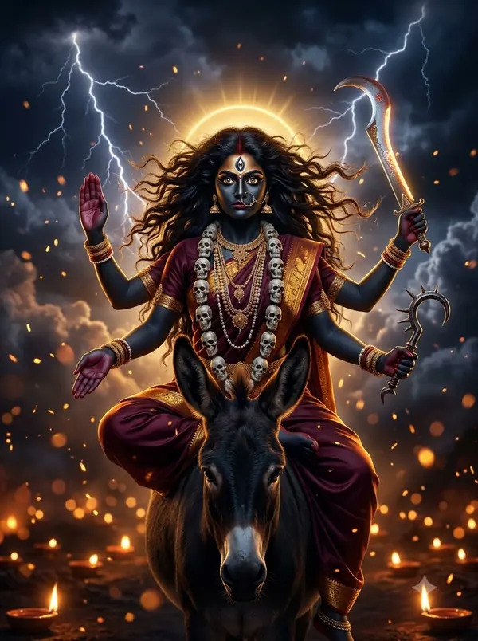

काली चालीसा — पूरे बोल और अर्थ
‘जय काली कंकाल मालिनी, जय मंगला महाकपालिनी’ से शुरू होने वाली काली चालीसा में रक्तबीज-वध, दस महाविद्याओं और दक्षिणेश्वर, कामाख्या, हिंगलाज जैसे शक्तिपीठों का वर्णन है।
दीपावली की रात काली पूजा, नवरात्रि की सप्तमी (कालरात्रि) और अमावस्या को इसका पाठ किया जाता है।

दोहा
जय जय सीताराम के, मध्यवासिनी अम्ब। देहु दर्श जगदम्ब अब, करहु न मातु विलम्ब॥
हे सीता-राम के बीच बसने वाली माता, जगदंबा, अब दर्शन दीजिए, देर न कीजिए।
जय तारा जय कालिका, जय दश विद्या वृन्द। काली चालीसा रचत, एक सिद्धि कवि हिन्द॥
हे तारा, हे कालिका, हे दस महाविद्याओं, आपकी जय हो; एक सिद्ध कवि यह काली चालीसा रच रहा है।
प्रातः काल उठ जो पढ़े, दुपहरिया या शाम। दुःख दरिद्रता दूर हों, सिद्धि होय सब काम॥
जो सुबह, दोपहर या शाम इसे पढ़ता है, उसके दुःख-दरिद्रता दूर होते हैं और सब काम सिद्ध होते हैं।
चौपाई
जय काली कंकाल मालिनी। जय मंगला महाकपालिनी॥
हे कंकालों की माला पहनने वाली काली, मंगल करने वाली महाकपालिनी, आपकी जय हो।
रक्तबीज वधकारिणी माता। सदा भक्तन की सुखदाता॥
हे रक्तबीज का वध करने वाली माता, आप सदा भक्तों को सुख देती हैं।
शिरो मालिका भूषित अंगे। जय काली जय मद्य मतंगे॥
मुंडों की माला से सजे अंगों वाली, मस्त हाथी जैसी शक्तिशाली काली, आपकी जय हो।
हर हृदयारविन्द सुविलासिनी। जय जगदम्बा सकल दुःख नाशिनी॥
शिव के हृदय-कमल में विराजने वाली, सारे दुःख नष्ट करने वाली जगदंबा, आपकी जय हो।
ह्रीं काली श्रीं महाकराली। क्रीं कल्याणी दक्षिणाकाली॥
ह्रीं रूप काली, श्रीं रूप महाकराली, क्रीं रूप कल्याणी दक्षिणकाली — आपको प्रणाम।
जय कलावती जय विद्यावति। जय तारासुन्दरी महामति॥
हे कलाओं वाली, हे विद्या वाली, हे तारा, हे सुंदरी, हे महाबुद्धिमती, आपकी जय हो।
देहु सुबुद्धि हरहु सब संकट। होहु भक्त के आगे परगट॥
सद्बुद्धि दीजिए, सब संकट हरिए और भक्त के सामने प्रकट होइए।
जय ॐकारे जय हुंकारे। महाशक्ति जय अपरम्पारे॥
हे ॐकार रूप, हे हुंकार रूप, हे अपार महाशक्ति, आपकी जय हो।
कमला कलियुग दर्प विनाशिनी। सदा भक्तजन की भयनाशिनी॥
हे कमला, कलियुग का घमंड तोड़ने वाली, आप सदा भक्तों का भय नष्ट करती हैं।
अब जगदम्ब न देर लगावहु। दुख दरिद्रता मोर हटावहु॥
हे जगदंबा, अब देर मत कीजिए; मेरे दुःख और दरिद्रता दूर कीजिए।
जयति कराल कालिका माता। कालानल समान द्युतिगाता॥
हे विकराल कालिका माता, प्रलय की आग जैसी चमक वाली, आपकी जय हो।
जय शंकरी सुरेशि सनातनि। कोटि सिद्धि कवि मातु पुरातनी॥
हे शंकरी, देवताओं की स्वामिनी, सनातनी, करोड़ों सिद्धियाँ देने वाली प्राचीन माता, आपकी जय हो।
कपर्दिनी कलि कल्प विमोचनि। जय विकसित नव नलिन विलोचनि॥
हे जटाधारिणी, कलियुग के पापों से छुड़ाने वाली, खिले हुए नए कमल जैसे नेत्रों वाली, आपकी जय हो।
आनन्द करणी आनन्द निधाना। देहु मातु मोहि निर्मल ज्ञाना॥
हे आनंद देने वाली, आनंद की खान माता, मुझे निर्मल ज्ञान दीजिए।
करुणामृत सागरा कृपामयी। होहु दुष्ट जन पर अब निर्दयी॥
आप करुणा के अमृत का सागर, कृपामयी हैं; अब दुष्टों पर निर्दय होइए।
सकल जीव तोहि परम पियारा। सकल विश्व तोरे आधारा॥
सारे जीव आपको परम प्रिय हैं; सारा विश्व आपके आधार पर टिका है।
प्रलय काल में नर्तन कारिणि। जग जननी सब जग की पालिनी॥
प्रलय के समय नृत्य करने वाली, जगत-जननी, सारे जग का पालन करने वाली हैं आप।
महोदरी माहेश्वरी माया। हिमगिरि सुता विश्व की छाया॥
आप महोदरी, माहेश्वरी, माया, हिमालय की पुत्री और विश्व की छाया (आश्रय) हैं।
स्वछन्द रद मारद धुनि माही। गर्जत तुम्हीं और कोउ नाहीं॥
युद्ध की ध्वनि में स्वच्छंद होकर केवल आप ही गरजती हैं, दूसरा कोई नहीं।
स्फुरति मणिगणाकार प्रताने। तारागण तू व्योम विताने॥
आकाश के चँदोवे में मणियों की तरह चमकते तारे आप ही हैं।
श्रीधारे सन्तन हितकारिणी। अग्निपाणि अति दुष्ट विदारिणि॥
हे लक्ष्मी धारण करने वाली, संतों का हित करने वाली, हाथ में अग्नि लिए दुष्टों को चीरने वाली!
धूम्र विलोचनि प्राण विमोचिनी। शुम्भ निशुम्भ मथनि वर लोचनि॥
धूम्रलोचन के प्राण हरने वाली, शुंभ-निशुंभ को मथने वाली, सुंदर नेत्रों वाली आप हैं।
सहस भुजी सरोरुह मालिनी। चामुण्डे मरघट की वासिनी॥
हज़ार भुजाओं वाली, कमलों की माला पहनने वाली, श्मशान में रहने वाली चामुंडा!
खप्पर मध्य सुशोणित साजी। मारेहु माँ महिषासुर पाजी॥
खप्पर में रक्त भरे हुए, हे माँ, आपने दुष्ट महिषासुर को मारा।
अम्ब अम्बिका चण्ड चण्डिका। सब एके तुम आदि कालिका॥
अंबा, अंबिका, चंडी, चंडिका — ये सब एक आप ही हैं, आदि कालिका।
अजा एकरूपा बहुरूपा। अकथ चरित्रा शक्ति अनूपा॥
आप अजन्मा, एक रूप भी और बहुरूप भी हैं; आपका चरित्र अकथनीय और शक्ति अनुपम है।
कलकत्ता के दक्षिण द्वारे। मूरति तोरि महेशि अपारे॥
कलकत्ते के दक्षिणेश्वर में, हे महेश्वरी, आपकी अपार महिमा वाली मूर्ति है।
कादम्बरी पानरत श्यामा। जय मातंगी काम के धामा॥
हे श्यामा, हे मातंगी, कामनाएँ पूरी करने वाली, आपकी जय हो।
कमलासन वासिनी कमलायनि। जय श्यामा जय जय श्यामायनि॥
कमल के आसन पर बैठने वाली, कमला, श्यामा, आपकी जय हो।
मातंगी जय जयति प्रकृति हे। जयति भक्ति उर कुमति सुमति हे॥
हे मातंगी, हे प्रकृति, आपकी जय हो; आप हृदय में भक्ति जगाकर कुमति को सुमति बनाती हैं।
कोटि ब्रह्म शिव विष्णु कामदा। जयति अहिंसा धर्म जन्मदा॥
करोड़ों ब्रह्मा, शिव, विष्णु की कामना पूरी करने वाली, अहिंसा और धर्म को जन्म देने वाली, आपकी जय हो।
जलथल नभ मण्डल में व्यापिनी। सौदामिनी मध्य आलापिनि॥
आप जल, थल और आकाश में व्याप्त हैं; बिजली की चमक में भी आप ही बोलती हैं।
झननन तच्छु मरिरिन नादिनी। जय सरस्वती वीणा वादिनी॥
झन-झन, तत-थई की ध्वनि करने वाली, वीणा बजाने वाली सरस्वती, आपकी जय हो।
ॐ ऐं ह्रीं क्लीं चामुण्डायै विच्चे। कलित कण्ठ शोभित नरमुण्डा॥
‘ॐ ऐं ह्रीं क्लीं चामुण्डायै विच्चे’ (नवार्ण मंत्र) — गले में मुंडमाला से शोभित माता!
जय ब्रह्माण्ड सिद्धि कवि माता। कामाख्या और काली माता॥
हे ब्रह्मांड को सिद्धि देने वाली माता, कामाख्या और काली माता, आपकी जय हो।
हिंगलाज विन्ध्याचल वासिनी। अट्टहासिनि अरु अघ नाशिनी॥
हिंगलाज और विंध्याचल में रहने वाली, अट्टहास करने वाली, पाप नष्ट करने वाली आप हैं।
कितनी स्तुति करूँ अखण्डे। तू ब्रह्माण्डे शक्तिजित चण्डे॥
हे अखंड, मैं कितनी स्तुति करूँ! हे चंडी, आप सारे ब्रह्मांड की शक्ति को जीतने वाली हैं।
करहु कृपा सब पे जगदम्बा। रहहिं निशंक तोर अवलम्बा॥
हे जगदंबा, सब पर कृपा कीजिए; आपके सहारे सब निडर रहें।
चतुर्भुजी काली तुम श्यामा। रूप तुम्हार महा अभिरामा॥
हे चार भुजाओं वाली काली श्यामा, आपका रूप अत्यंत सुंदर है।
खड्ग और खप्पर कर सोहत। सुर नर मुनि सबको मन मोहत॥
हाथों में तलवार और खप्पर शोभा देते हैं; देवता, मनुष्य, मुनि सबका मन मोहते हैं।
तुम्हारी कृपा पावे जो कोई। रोग शोक नहिं ताकहँ होई॥
जो आपकी कृपा पाता है, उसे रोग-शोक नहीं होता।
जो यह पाठ करै चालीसा। तापर कृपा करहिं गौरीशा॥
जो यह चालीसा पढ़ता है, उस पर गौरी-पति शिव भी कृपा करते हैं।
दोहा
जय कपालिनी जय शिवा, जय जय जय जगदम्ब। सदा भक्तजन केरि दुःख, हरहु मातु अविलम्ब॥
हे कपालिनी, हे शिवा, हे जगदंबा, आपकी जय हो; हे माता, भक्तों के दुःख बिना देर किए सदा हरती रहिए।
काली चालीसा का पाठ पूरा हुआ।
किसी अपने को WhatsApp पर भेजेंपाठ पारंपरिक है और अलग-अलग क्षेत्रों में शब्दों में थोड़ा अंतर मिलता है। अर्थ सरल हिंदी में OmKiran Bhakti ने लिखा है। कोई त्रुटि दिखे तो YouTube पर कमेंट करके बताएँ।